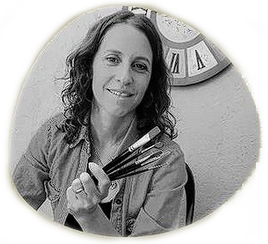

<section>
  <div class="container-fluid" id="courses">
    <div class="row">
      <div class="lupe-header col-12">
        
      </div>
    </div>
    <div class="row">
      <div class="lupe-course-content col-12">
        <div class="txt-box col-8">
          <figure class="text-start">
            <h4 class="text-secondary">/sust. (fon, lú .pe)</h4>

            <blockquote class="blockquote">
              <h2>SOY <span class="text-danger">LUPE</span> RICO</h2>
              <figcaption class="blockquote-footer">
                <P
                  >Arquitecta, apasionada de la pintura, la deco y las
                  manualidades. Tengo mi taller de pintura en la entrada de
                  Juana Koslay (una localidad próxima a San Luis). Es mí lugar
                  de concentración y creatividad. Cuando estoy ahí... El tiempo
                  se para... Allí dicto clases y seminarios, también produzco
                  mis creaciones ...</P
                >
              </figcaption>
            </blockquote>
          </figure>
        </div>
      </div>
    </div>
  </div>
</section>
